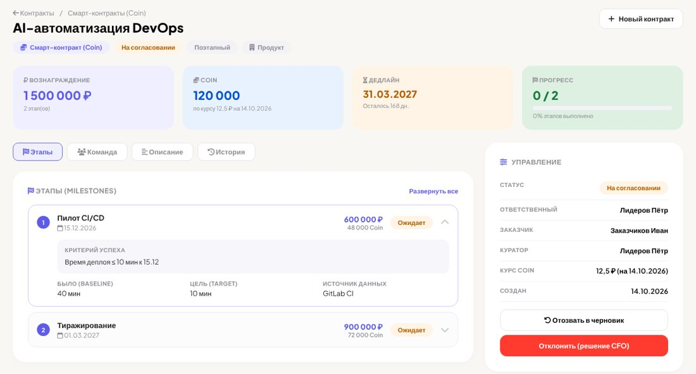
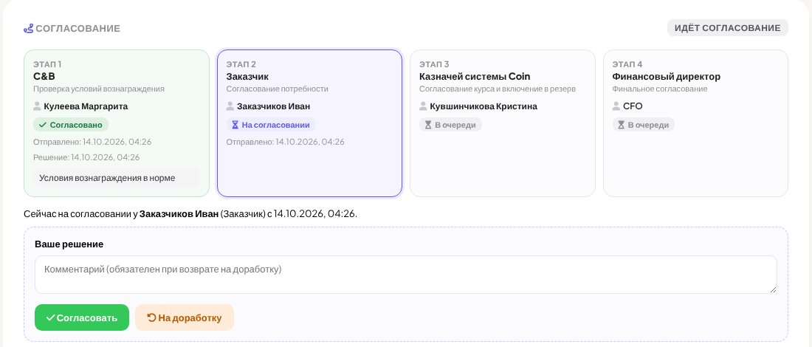
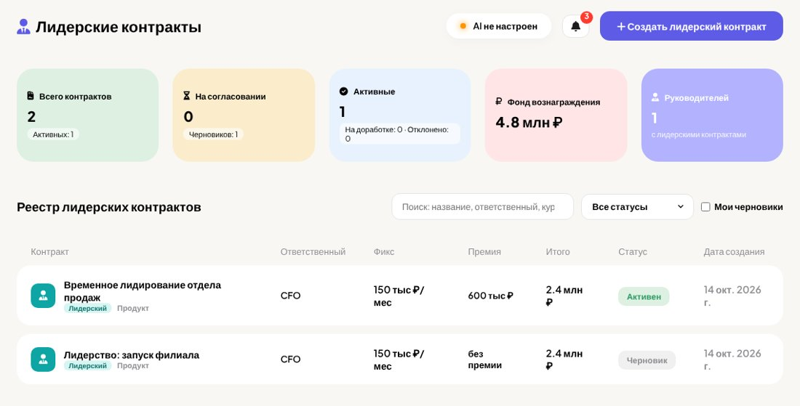
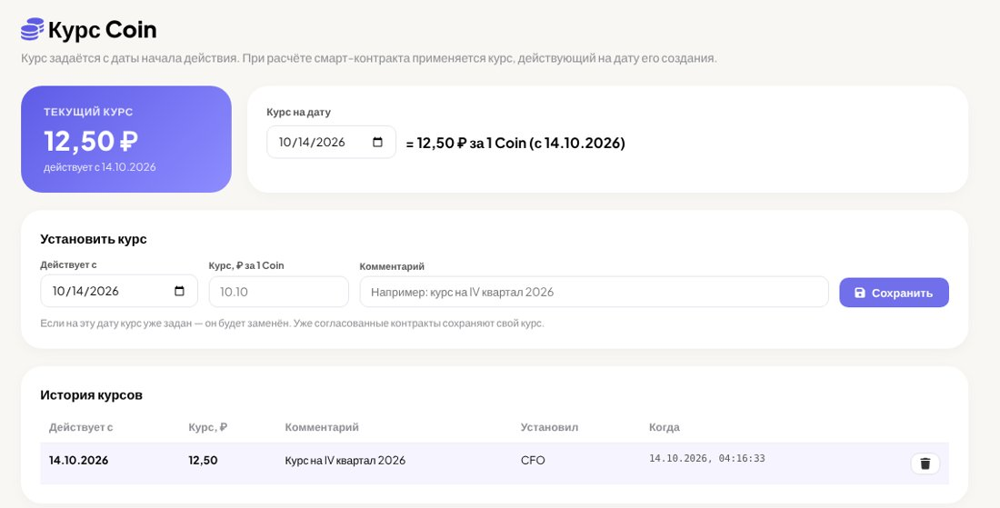
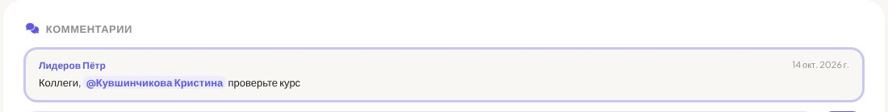
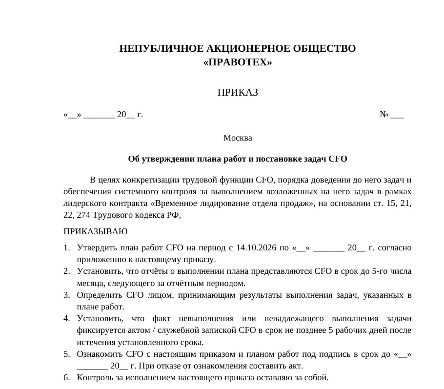

Модуль контрактов доработан полностью по коммерческому предложению. Работа с контрактами теперь идёт по циклу:
| № | Работа | Что сделано | Стоимость |
|---|---|---|---|
| 1 | Два раздела контрактов ✓ Выполнено |
В меню появилась группа «Контракты» с разделами «Смарт-контракты (Coin)» и «Лидерские контракты». У каждого раздела свой реестр: колонки по типу контракта, показатели, поиск, фильтр по статусу, флажок «Мои черновики» и своя кнопка создания. Тип контракта отмечен бейджем в реестре, в карточке и в уведомлениях. Где: Меню → Контракты → нужный раздел → «Создать» |
4 000 ₽ |
| 2 | Черновики ✓ Выполнено |
Контракт можно сохранить на любом шаге мастера без заполнения обязательных полей, выйти и позже продолжить с того же шага без потери данных. У черновиков и контрактов на доработке в карточке есть кнопка «Редактировать». Где: Кнопки «Сохранить черновик» и «Сохранить и выйти» в шапке мастера |
4 000 ₽ |
| 3 | Выбор ответственного ✓ Выполнено |
При создании контракта ответственным можно назначить любого сотрудника из списка. Назначенный сотрудник получает уведомление от Баффета. Тот, кто завёл контракт за коллегу, сохраняет к нему доступ. Где: Мастер, шаг «Суть» → поле «Ответственный» |
1 000 ₽ |
| 4 | Необязательная премия в лидерском контракте ✓ Выполнено |
Лидерский контракт оформляется с одной фиксированной частью. Премию по этапам указывать не обязательно. В карточке и документах в этом случае пишется «без премии (только фикс)». Где: Мастер лидерского контракта: оставьте премию равной 0 |
500 ₽ |
| 5 | Роли согласующих ✓ Выполнено |
В настройках сотрудники назначаются на роли C&B, казначея системы Coin, финансового директора, юриста и CEO. Каждый согласует только свой этап, раздавать права администратора не нужно. Где: Настройки → «Роли согласования» |
5 500 ₽ |
| 6 | Курс Coin на дату ✓ Выполнено |
Новый раздел «Курс Coin» показывает текущий курс, курс на любую дату и полную историю курсов: кто и когда их устанавливал. Курс устанавливают администратор и казначей. Вознаграждение контракта пересчитывается в Coin по курсу на дату его создания. Казначей может зафиксировать иной курс на своём этапе согласования. Где: Меню → Контракты → «Курс Coin» |
5 000 ₽ |
| 7 | Маршрут согласования ✓ Выполнено |
C&B → Заказчик → Казначей Coin → Финансовый директор Баффет уведомляет каждого согласующего по очереди. В личном сообщении есть кнопки «Согласовать» и «На доработку». Пока предыдущий согласующий не принял решение, контракт дальше не идёт. При возврате на доработку комментарий обязателен, после исправления маршрут начинается заново. Если этап висит больше двух суток, Баффет напоминает о нём. В карточке видно текущий этап, у кого контракт, дату отправки, решения и комментарии. На вкладке «История» — все изменения полей в формате «было → стало» и все согласования. Где: Карточка контракта → блок «Согласование» и вкладка «История» |
10 500 ₽ |
| 8 | Теги в комментариях ✓ Выполнено |
Коллегу можно отметить через @ (появится подсказка со списком сотрудников) или по фамилии. Отмеченный сотрудник получает уведомление от Баффета со ссылкой прямо на комментарий: страница сама прокручивается к нему и подсвечивает его. Работает в контрактах, инвест-проектах и операционных заявках. Где: Поле комментария: наберите «@» и начало фамилии |
5 500 ₽ |
| 9 | Новая визуализация карточки ✓ Выполнено |
Карточка контракта сделана по образцу карточки проекта:
Где: Откройте любой контракт из реестра |
5 500 ₽ |
| 10 | AI-помощник в мастере контракта ✓ Выполнено |
AI-помощник:
Подтверждение выполнения этапа и споры сохраняются в системе. Где: Кнопки с иконкой ✨ в мастере; действия по этапу в карточке |
включено |
| 11 | Отчёт по контрактам ✓ Выполнено |
Реестр контрактов выгружается в Excel или PDF. Фильтры: тип, статус, период, ответственный. В отчёте суммы в ₽ и Coin, курс, текущий этап согласования и у кого контракт. Где: Отчётность → «Реестр контрактов» или кнопка «Выгрузить реестр» в реестре |
3 000 ₽ |
| 12 | PDF по контракту ✓ Выполнено |
Документ по контракту в один клик. Содержит:
Где: Карточка контракта → «Скачать PDF» |
2 000 ₽ |
| 13 | Проект приказа (ЛНА) по контракту ✓ Выполнено |
По согласованному контракту одной кнопкой формируется проект приказа в .docx по скиллу «Постановка задач через ЛНА, план работ и приказ»:
Баффет рассылает документ на согласование: C&B → Юрист → CEO. При возврате на доработку загружается исправленный файл, и маршрут запускается заново. Где: Карточка согласованного контракта → «Сформировать проект приказа» |
9 500 ₽ |
| 14 | Приказ по инвест-проектам ✓ Выполнено |
Для согласованных инвест-проектов и операционных заявок формируется приказ о выделении денежных средств с графиком траншей в приложении. Маршрут согласования тот же. Текст сейчас собирается по временному шаблону, после получения шаблона компании он будет заменён. Где: Карточка согласованного проекта → блок «Проект приказа» |
3 000 ₽ |






На снимках — тестовые данные.
Работы выполнены в полном объёме согласно коммерческому предложению. Стоимость работ — 59 000 (пятьдесят девять тысяч) рублей. Оплата производится после приёмки работ.